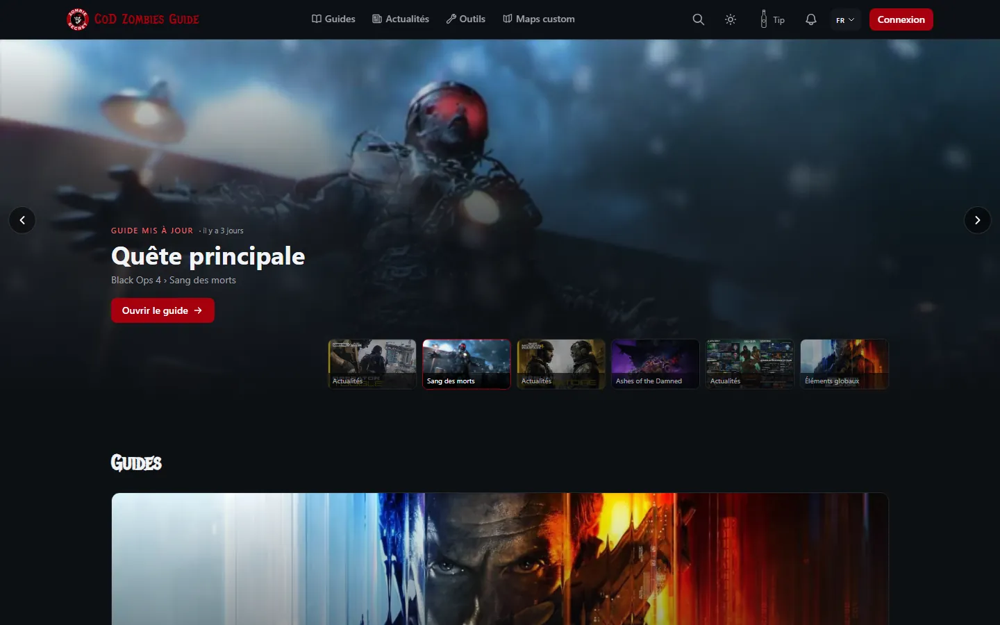
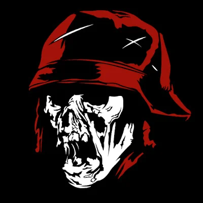
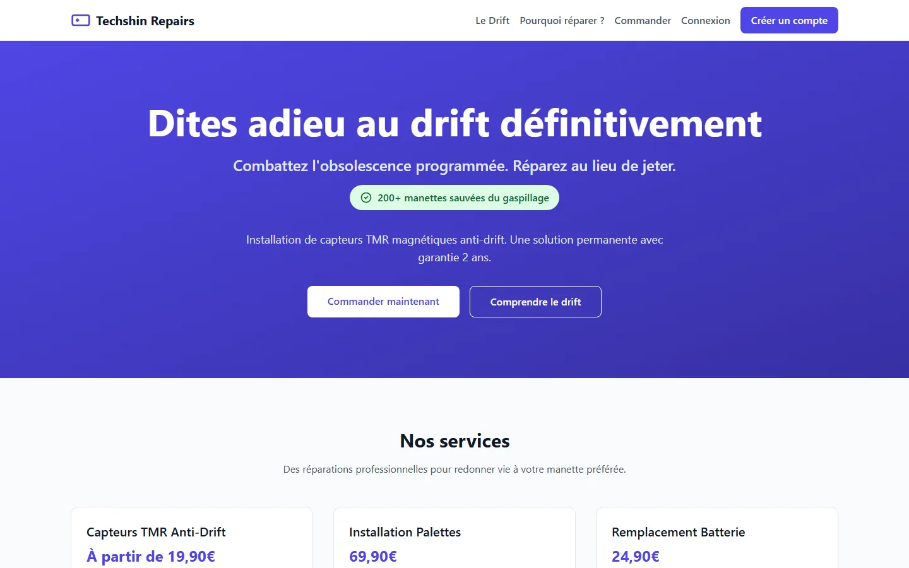
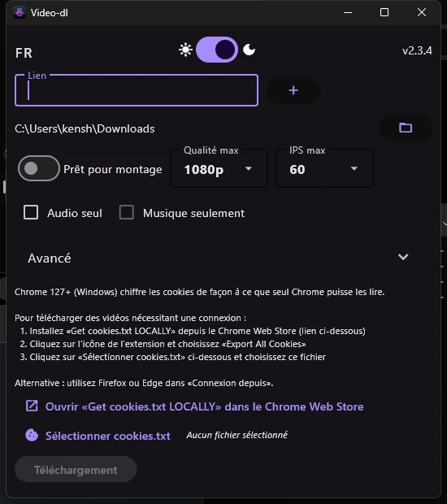
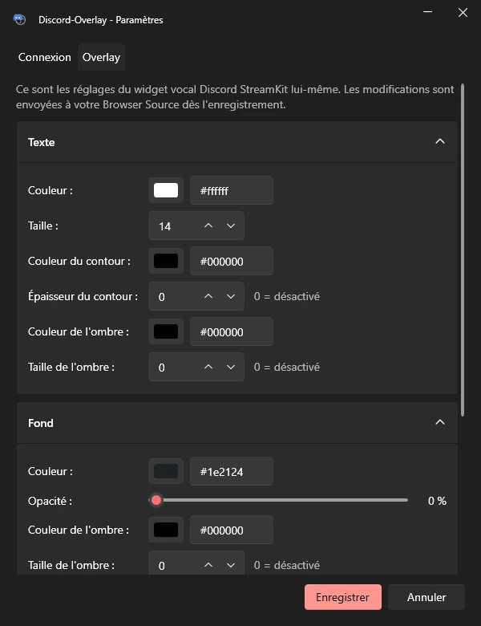
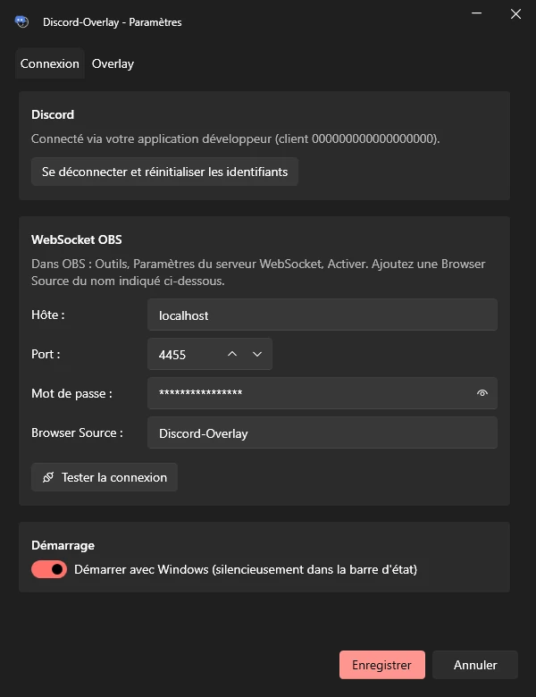
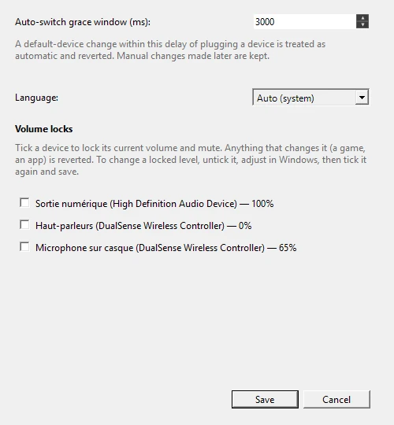
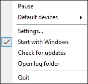
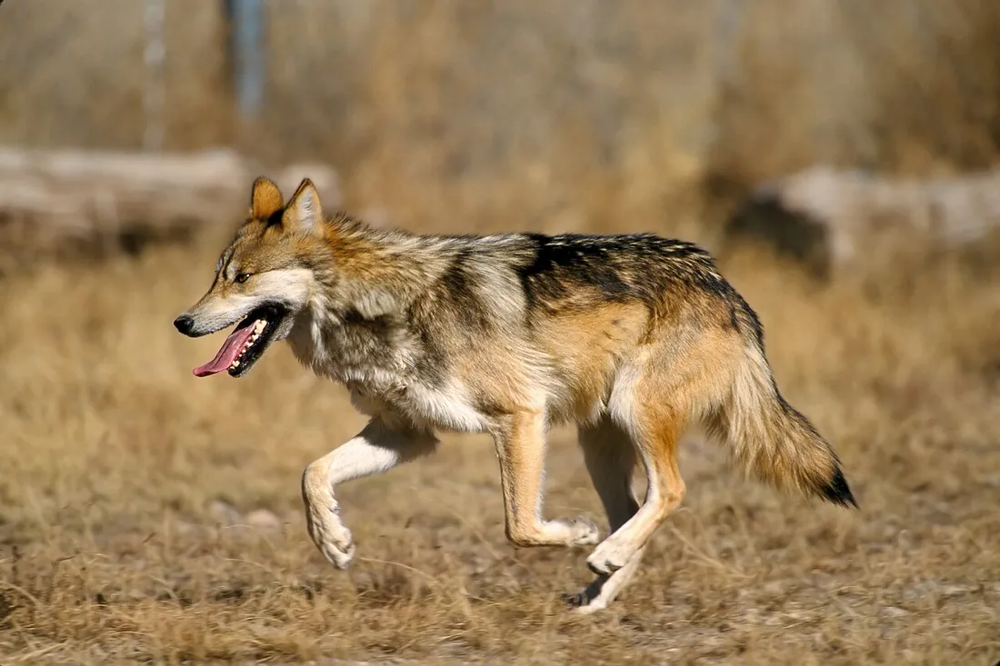

CoD Zombies Guide
Tous les guides, Easter Eggs et secrets du mode Zombies, pour toutes les maps et tous les jeux. Avec des outils pour résoudre les étapes les plus pénibles.
Ouvrir cod-zombies.com
Développeur · youtubeur
Je code des sites web et des petits outils Windows open source. J'ai aussi une chaîne YouTube sur le mode Zombies de Call of Duty. Voici tout ce qui tourne en ce moment.

Tous les guides, Easter Eggs et secrets du mode Zombies, pour toutes les maps et tous les jeux. Avec des outils pour résoudre les étapes les plus pénibles.
Ouvrir cod-zombies.com
Réparation de manettes : capteurs anti-drift à effet Hall, installation de palettes, remplacement de batterie. Commande et suivi en ligne, garantie 2 ans.
Ouvrir reparationmanette.frDes outils Windows gratuits et open source, nés d'un problème que j'avais moi-même.
Téléchargeur vidéo
Une interface pour yt-dlp. Tu colles un lien, tu choisis la qualité et les images par seconde, tu télécharges. Pas de ligne de commande, et une option pour sortir un fichier prêt pour le montage.

Outil pour streamers · OBS
L'overlay vocal Discord StreamKit dans OBS suit le salon où tu te trouves. Tu changes de serveur en plein stream, l'overlay suit, même quand un modérateur te déplace.


Audio Windows
Windows bascule tout seul sur le casque que tu viens de brancher. AudioWinFix remet tes périphériques par défaut à leur place et peut verrouiller le volume d'un appareil. Tes changements manuels, eux, sont gardés.


Câbles USB-C
Que vaut vraiment ce câble USB-C ? usbscope te le dit depuis la barre des tâches, dès que tu le branches. Inspiré de WhatCable sur macOS.
Extraction d'assets Call of Duty
Ma version de Greyhound, l'extracteur d'assets Call of Duty. Modèles, textures, sons, animations et maps, lus directement dans les fichiers du jeu, sans avoir à le lancer. Sur Black Ops III, les 264 zones du jeu sont lues.

Guides d'Easter Eggs, quêtes principales et histoire du mode Zombies, en français. Les vidéos restent en ligne.